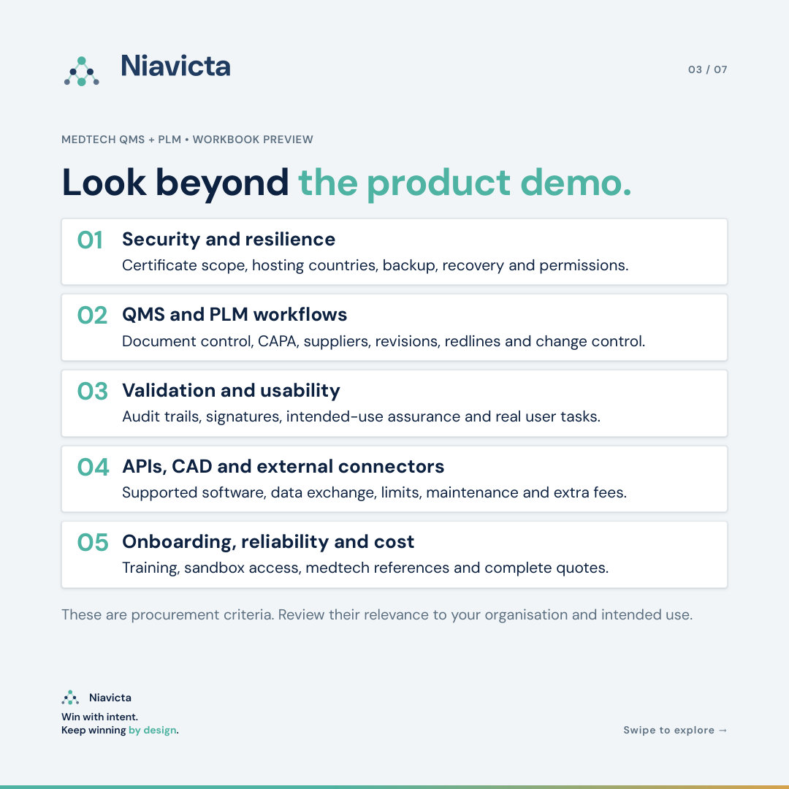
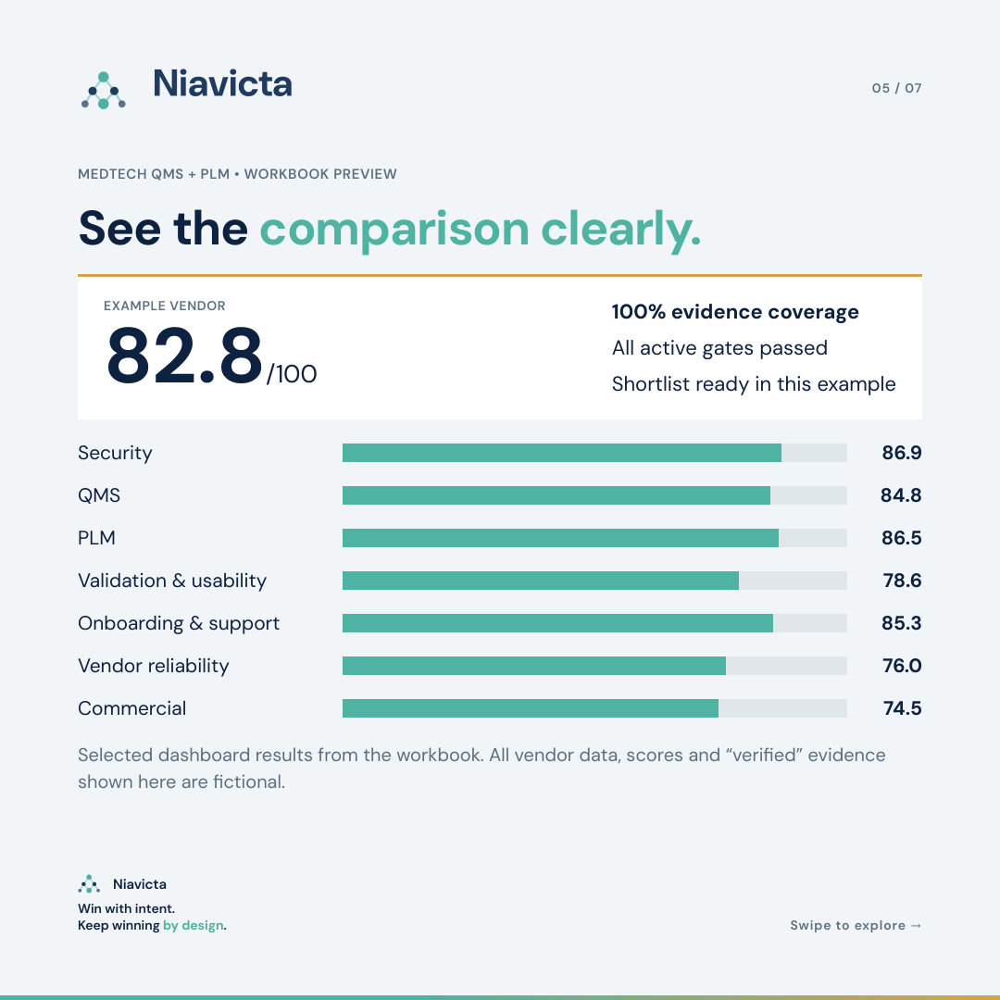
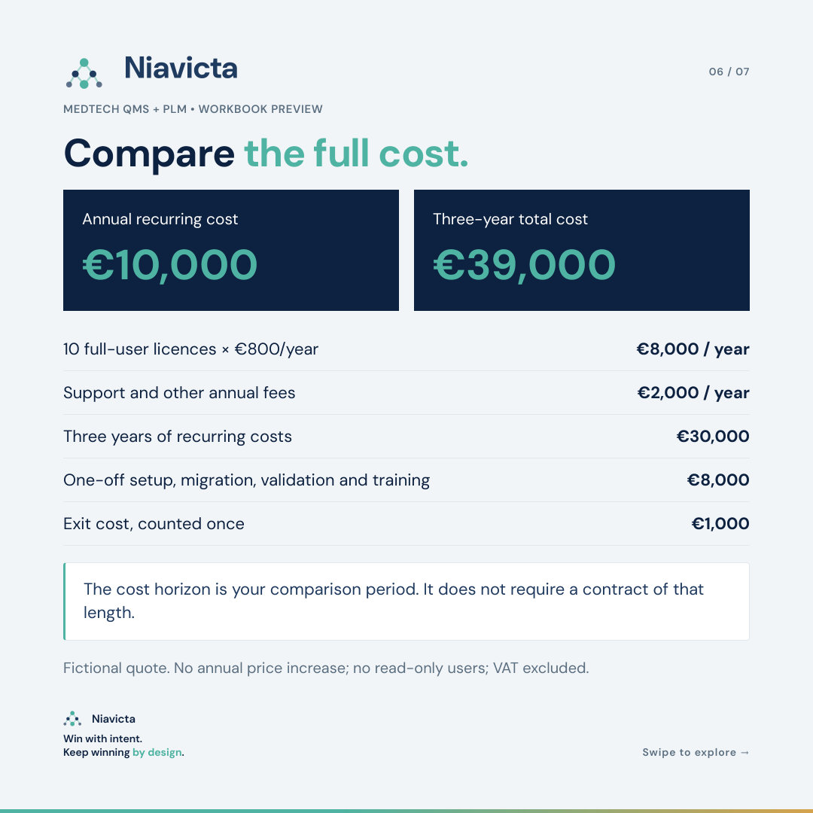

Seven categories
Security, QMS, PLM, validation and usability, onboarding and support, vendor reliability, and commercial terms. Each criterion names the question to ask and the evidence to request.
A free Excel workbook for medtech teams. Compare up to 10 QMS and PLM providers on the same criteria, the same evidence standard and the full cost of ownership.

Document control, CAPA, training records, supplier approvals, design history and audit trails all live inside your QMS and PLM. When the fit is weak, the gaps surface during an audit, a submission or a field issue. That is the most expensive moment to find them.
ISO 13485 asks you to validate the software used in your quality management system for its intended use, before first use and after changes (clause 4.1.6). It also treats the provider as a supplier you evaluate and select against documented criteria (clause 7.4.1). The evaluation is where both of those records begin.
A structured evaluation gives you three things: a shortlist built on demonstrated capability, a record of why you chose, and a head start on supplier qualification and validation.
Security, QMS, PLM, validation and usability, onboarding and support, vendor reliability, and commercial terms. Each criterion names the question to ask and the evidence to request.
Mark the criteria a provider must pass, such as ISO 27001 scope, EU data location, document control and audit trails. A failed gate blocks qualification, even with a high score.
A score earns points once you check it against a demo, document, test or reference, with a reviewer and date. Vendor claims stay visible as claims.
Licences, support, implementation, migration, validation support, training and exit cost, compared over the horizon you choose.
Up to 10 vendors with gate status, evidence coverage, weighted score, budget check and a qualified rank.
A fictional vendor filled in end to end, so you can see how inputs become scores before you start your own.



Moving to a new QMS or PLM changes how your quality system works. Raise it as a change: describe it, assess the impact on procedures, records, training and open work, get it approved, and plan the transition.
Validate the configured system for the way you will use it, before go-live and after significant changes. A vendor validation pack is useful input. The validation of your configuration is yours to own and sign.
Record the evaluation, approval and planned re-evaluation under your purchasing controls. This workbook gives you the evaluation record to start from.
Confirm you can export complete records, attachments and audit history in usable formats, and agree how legacy records stay retrievable for their retention period.
Ask for sandbox access and run the same scripted tasks with your own team on every shortlisted system. Daily usability decides whether the records get kept.
Link every score to its demo, document or reference call. The completed workbook then becomes part of your documented selection decision.
References used in the workbook
ISO 13485 overview (ISO)
EU MDR (EU) 2017/745, Article 10(9)
FDA computer software assurance guidance
ISO/IEC 27001:2022 (ISO)